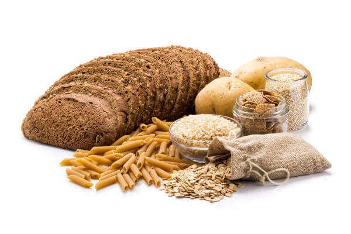
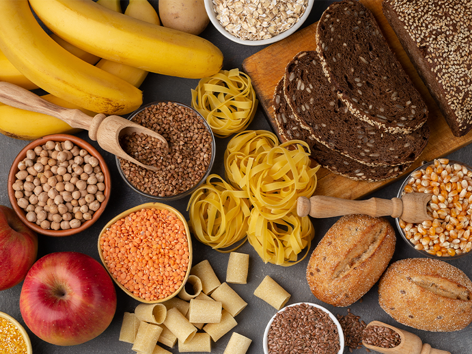

Os carboidratos são nutrientes formados por carbono, hidrogênio e oxigênio.
Têm a função de fornecer energia para manter as funções vitais do organismo.
Açúcares: Os principais são a Sacarose, Frutose e Lactose.
Amidos: É composto por Amilose e Amilopectina que são degradados em glicose por enzimas do aparelho digestório.
Produção de energia
Melhoria da saúde digestiva
Preservação de massa muscular.

São carboidratos formados por uma única unidade de açúcar.
Os polissacarídeos são vários monossacarídeos unidos por ligações glicosídicas em uma longa cadeia polimérica.
Duas moléculas de monossacarídeos podem se ligar quimicamente para formar um dissacarídeo. O nome dado à ligação covalente entre os dois monossacarídeos é ligação glicosídica.